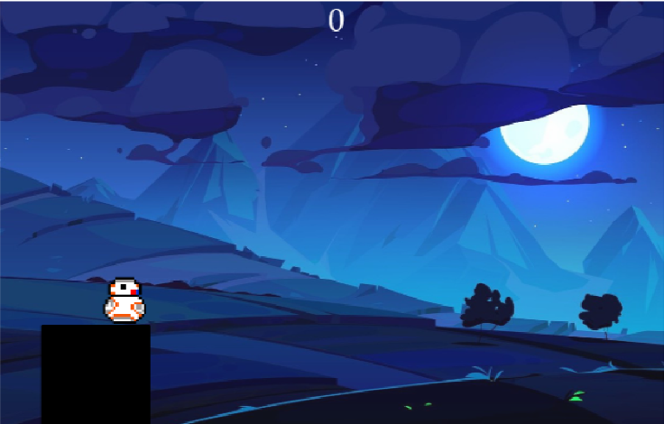
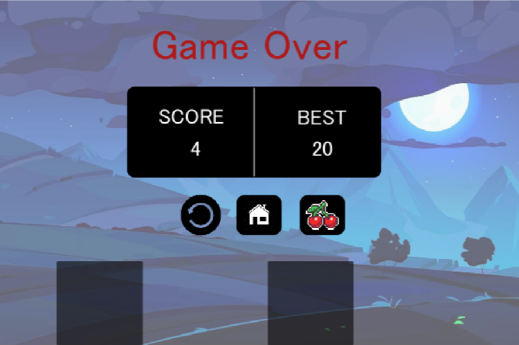

A JavaFX recreation of the popular mobile game 'Stick Hero' for PC.
Stick Hero is a JavaFX-based desktop application that recreates the popular mobile game. The project involved implementing game mechanics such as character movement, dynamic obstacle generation, and scoring systems. This project was developed as part of the Advanced Programming (AP) course.
The goal was to recreate a well-known mobile game to improve our JavaFX skills, develop graphical user interfaces (GUIs), and understand game development concepts like physics-based mechanics and sprite animation.
The game was designed with a structured object-oriented approach. Key components include:
UML diagram representing the class structure and relationships within the Stick Hero project:contentReference[oaicite:0]{index=0}.
Opening screen for Stick Hero, featuring the start button and character sprite:contentReference[oaicite:1]{index=1}.
Gameplay screen during platform traversal:contentReference[oaicite:2]{index=2}.
Game over screen displaying the score and best score:contentReference[oaicite:3]{index=3}.
Pixel-art sprite diagrams used for character movement and animation:contentReference[oaicite:4]{index=4}.
One of the primary challenges was implementing dynamic platform scaling and ensuring accurate collision detection. This project provided valuable experience in handling GUI elements, event-driven programming, and game logic development in JavaFX.
View the full project on GitHub: Stick Hero JavaFX Repository